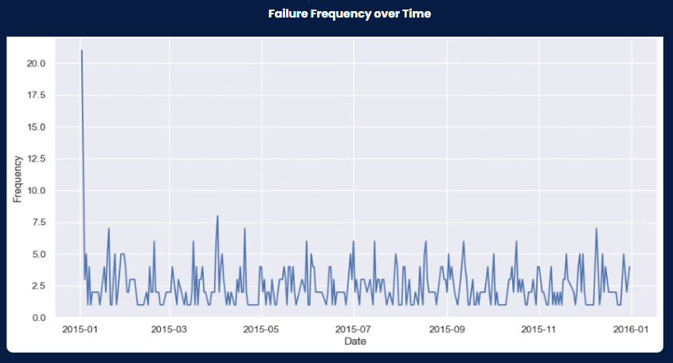
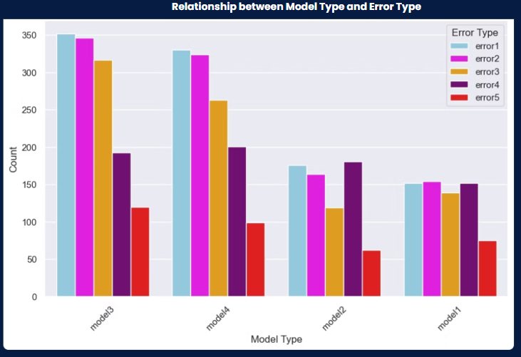
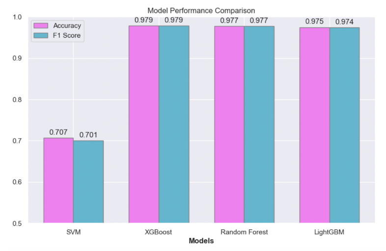

Project Overview
This project, developed as part of an internship with Sand Technologies, focuses on creating a predictive maintenance system using multivariate data to enhance operational efficiency.
- Anticipates failures and improves safety.
- Reduces costs with machine learning techniques.
- Features interactive dashboards for real-time monitoring.
Problem Statement
Modern industrial systems face challenges with unexpected equipment failures, leading to downtime and inefficiency. This project addresses these by:
- Proactively predicting failures using multivariate data.
- Optimizing maintenance schedules.
- Integrating explainable AI for actionable insights.
Data Summary
- Errors: Hourly logs of machine errors.
- Maintenance Events: Records of component replacements.
- Failures: Indications of failed components.
- Telemetry: Machine metrics like voltage, rotation, pressure, and vibration.
- Metadata: Information about machine model types and ages.
Key Steps in the Project
- Data preprocessing, including one-hot encoding and feature engineering.
- Modeling using LightGBM, XGBoost, and Random Forest.
- Explainability with SHAP and LIME for actionable insights.
Analysis Insights
 Model Performance
The models achieved high accuracy and precision, with results summarized below:

Deployment
Interactive dashboards and applications were developed for real-time monitoring and decision-making:
- Power BI Dashboard: Visual insights into machine performance and failure predictions.
- Streamlit Application: Web-based interface for exploring predictions and explainability outputs.
Future Improvements
- Implement feedback loops for continuous improvement.
- Explore advanced architectures for dynamic updates.
- Address ethical considerations to ensure compliance.
- Conduct training sessions for stakeholders.